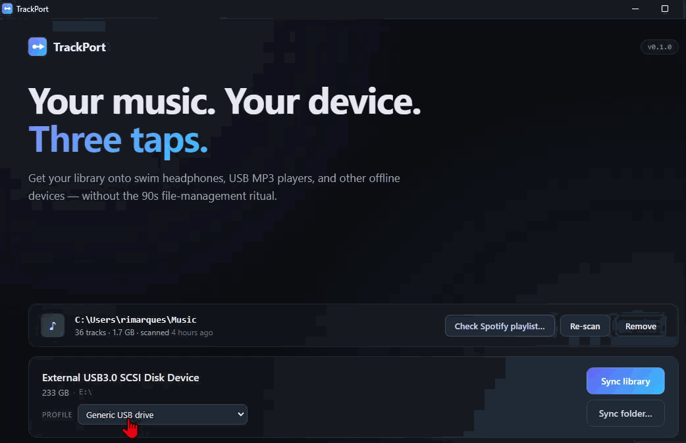

Get your music onto your offline device.
In three taps.
A focused desktop tool for swim headphones, USB MP3 players, and the other devices that don't stream. Pick the device. Sync your library. Copy. That's it.

Loading latest release…
-
Knows your device
Detects Shokz OpenSwim, FINIS Duo, and generic USB MP3 players. Filters formats per device automatically.
-
Preserves order
For transmission-time devices like Shokz, tracks land in the order you want — not the order the filesystem felt like.
-
Smart fit
Library bigger than the device? Pick a strategy, see what gets dropped, then copy.
-
Free forever
The desktop app is free, and stays free. Open source under MIT. No telemetry, no DRM bypass, no audio extraction.
First-install notes
Windows: the installer is currently unsigned, so SmartScreen will pop up the first time you run it. Click "More info" → "Run anyway". (Code signing is on the roadmap once the project has more users.)
macOS: right-click the app the first time and choose "Open" to bypass the Gatekeeper warning. Notarization will land soon.
Linux: AppImage — make it executable (chmod +x) and run.
Common issues
Things real users hit. If yours isn't listed, email me — it probably should be.
The device doesn't show up when I plug it in
In likelihood order:
- Wet or dirty charging contacts. Especially on Shokz OpenSwim and OpenSwim Pro. Wipe the contacts on both the cable and the device with a dry cloth. Salt and chlorine corrode the magnetic connection.
- Device not in disk mode. On OpenSwim Pro, hold the Volume + (or power) button for 5–10 seconds after plugging in to force disk mode.
- Cable or port issue. Try a different USB port — ideally straight into the computer, not through a hub. The factory cable is wear-prone; a known-good replacement often fixes it.
- macOS only. If it appeared once and stopped, empty the Trash first — macOS holds files that block the device from re-mounting.
Sync fails with "EPERM" or "permission denied" on every file
Windows has mounted the device read-only. Common after a dirty unmount (the device was unplugged without "Safely Remove Hardware") or a power blip during a previous sync.
Fixes, in order:
- Safely eject the device, then re-plug.
- For OpenSwim Pro: re-trigger disk mode (hold Volume + for 5–10 s when plugged in).
-
From an admin PowerShell, run
chkdsk X: /f(replaceX:with your device's drive letter). This repairs filesystem flags that pin the volume read-only.
TrackPort never modifies the device's filesystem flags — this is a Windows / device-firmware interaction, not a TrackPort bug.
Tracks are playing in the wrong order on my Shokz
This is what TrackPort is built to fix. If it's still happening:
- Check the device is in Normal mode, not Shuffle. On OpenSwim Pro, hold the multifunction button + Volume + for 2 seconds in MP3 mode — Audrey says "Normal" / "Shuffle" / "Repeat" as you cycle.
- Make sure "Clear device first" is on. Leftover files from previous syncs interleave with the new order. TrackPort defaults this to ON for Shokz devices.
- Power-cycle the device after sync. Some firmware versions only refresh the playlist index on power-on.
FINIS Duo: some tracks are skipped or won't play
The Duo plays unprotected MP3 and WMA only. Common files it rejects:
-
.m4a/.aac(iTunes-purchased and Apple Music exports) -
.flac,.wav,.ogg(lossless and open formats) - DRM-protected files from any service
TrackPort filters formats per device profile — anything the Duo can't play is skipped at preflight, not copied. If the device still won't play files you expect to work, the source MP3 may be unusually encoded (very low VBR, exotic codec settings). Re-encode the source to standard CBR MP3 and try again.
Scary "unknown publisher" warning on first install
The installers are unsigned for now (Authenticode certs on Windows are ~€300/yr, Apple Developer Program is €99/yr — both on the roadmap as the project finds users). Click through:
- Windows SmartScreen: "More info" → "Run anyway". The warning never reappears for that installer.
- macOS Gatekeeper: right-click TrackPort.app → "Open" → confirm. This permanently allows that specific app.
-
Linux AppImage:
chmod +x TrackPort-*.AppImageand run.
Questions, bugs, feature requests?
TrackPort is built by one person. Email is the fastest way to reach me — bug reports, device compatibility notes, and feature ideas are all welcome.
Bug reports and feedback are free. If TrackPort saved you fiddling time, you can also sponsor the project →